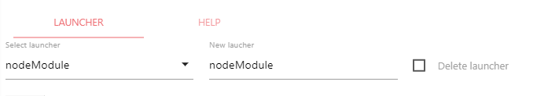
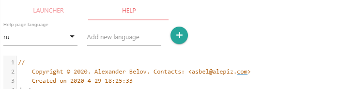

Описание Launcher editor
Launcher editor служит для создания нового или редактирования существующего лаунчера. Для удобства в Launcher Editor встроен редактор JavaScript и редактор шаблонов PUG. Launcher editor имеет все необходимые средства для разработки лаунчеров и не требует установки дополнительных сред разработки. Лаунчер служит для запуска действий различными способами. Это может быть подключаемый через require стандартный JavaScript код nodejs, либо исполняемый скрипт perl, который запускается с использованием установленного интерпретатора perl, либо запуск команд на удаленном Microsoft Windows Server с использованием технологии WMI. Для каждого действия должен быть настроен лаунчер, с помощью которого действие будет запускаться.
Возвращаемое значение: Launcher ID (имя папки, в которой расположено редактируемый лаунчер)
Описание интерфейса
Launcher
Select launcher
Позволяет выбрать существующий лаунчер из списка, либо создать новый.
New launcher
Если вы создаете новый лаунчер, то его название необходимо ввести в это поле. Название лаунчера так же является это папкой, в которой хранятся файлы для лаунчера. Если вы выбрали существующий лаунчер, его название появится в этом поле. Если изменить название лаунчера, папка с лаунчером будет переименована.
Delete launcher
При выборе этого checkbox выбранный лаунчер будет удален.
Формирования файла помощи во вкладке HELP
Help page language
Можно выбрать страницу помощи для требуемого языка. При выборе нового языка, все текущие изменения, сделанные на странице помощи, не сохраняются. Если страницы помощи не существовало, в этом поле будет установлен язык, используемый в браузере по умолчанию. Если существует страница помощи с языком, используемым в браузере по умолчанию, она будет отображена в первую очередь. Иначе отображается страница помощи на английском языке. Если страницы помощи на языке, установленном в браузере и страницы помощи на английском языке не существует, будет отображена первая попавшаяся страница помощи.
Add new language
Если в это поле добавить новый язык и нажать на кнопку "+", он будет добавлен в список языков. Help page language. Затем можно создать страницу помощи на добавленном языке.
Разработка нового лаунчера
Лаунчер состоит из нескольких стандартных компонент:
- launcher.js - исполняемый код лаунчера
- help\index.ru.pug - статическая страница помощи с описанием использования лаунчера
В Launcher editor созданы готовые шаблоны, используя которые можно быстро разработать собственный лаунчер.
Подключение дополнительных модулей nodejs
Если требуется подключить внешний модуль nodejs, необходимо установить его в каталог node_modules, который должен находится в корневом каталоге разрабатываемой компоненты. Для этого можно воспользоваться утилитой npm и в корневом каталоге компоненты выполнить следующие шаги:
- создать файл package.json вручную либо запустить npm init и ответить на вопросы.
- выполнить nmp i <имя модуля>. Появится каталог node_modules в который будет установлен требуемый модуль
launcher.js - файл с исходным кодом лаунчера
Файл с исходным кодом лаунчера является стандартным модулем nodejs и должен экспортировать функцию типа function (param, args, callback) {...}, где аргументы функции означают:
- param - параметры, которые передаются из пользовательского интерфейса действия в виде объекта {<param1>: <value1>, <param2>: <value2>, ....}
- args - Аргументы, которые передаются из настроек действия, объекта launcherPrms, в виде launcherPrms: {<arg1>: <value1>, <arg2>: <value2>, ....}
- callback - функция callback(err, result), где err - объект с ошибкой или null; result - результат, возвращаемый действием для использования в задачах.
Пример исходного кода лаунчера, запускающего модули nodejs и принимающего в качестве аргументов параметр javaScript: <Имя файла JavaScript>
/*
* Copyright (C) 2018. Alexander Belov. Contacts: <asbel@alepiz.com>
*/
var log = require('../../lib/log')(module);
var Conf = require('../../lib/conf');
const confActions = new Conf('config/actions.json');
var path = require("path");
var servers = {};
module.exports = function(prms, args, callback){
if(!prms || !prms.javaScript) {
return callback(new Error('Java script file is not specified for launcher "nodeModule"'));
}
var javaScript = path.join(__dirname, '..', '..', confActions.get('dir'), prms.actionID, prms.javaScript);
if(!servers[javaScript] || prms.updateAction) {
try {
// delete old javaScript from require cache for reread
if(prms.updateAction && require.resolve(javaScript) &&
require.cache[require.resolve(javaScript)]) {
delete require.cache[require.resolve(javaScript)];
}
log.info('Attaching nodejs file ', javaScript,
(prms.updateAction ? '. Required action update. Cached data was deleted.' : ''));
servers[javaScript] = require(javaScript);
} catch (err) {
return callback(new Error('Can\'t attach source js file: ' + javaScript +
' for launcher "nodeModule": ' + err.message));
}
}
try {
servers[javaScript](args, callback);
} catch (err) {
callback(new Error('Error occurred while executing js file ' + javaScript +
' for launcher "nodeModule": ' + err.message));
}
};
help\index.ru.pug - страница помощи с описанием лаунчера
Для формирования страниц помощи используется шаблонизатор PUG , который, используя препроцессор, формирует HTML страницу. Никаких специальных требований к странице помощи нет. Для того, чтобы все компоненты интерфейса ALEPIZ были созданы в одном стиле, желательно использовать готовый шаблон, предоставляемый Launcher editor и элементы фреймворка materializecss.
Скрипт help.js, включенный в шаблон страницы помощи, автоматически сформирует оглавление документа из заголовков, добавит нижний колонтитул с информацией о copyright и плавающий элемент слева для перехода к верхней части страницы:
- Оглавление добавляется в первый элемент на странице с классом offset-m1
- Нижний колонтитул будет добавлен в элемент с тегом body
- copyright формируется из элемента meta("author"), например meta(name="author" content="Alexander Belov <asbel@alepiz.com>") добавит соответствующий copyright и ссылку для составления почтового сообщения. Год формируется из document.lastModified || document.lastModifiedDate
- плавающий элемент слева для перехода к верхней части страницы будет добавлен в элемент с тегом main